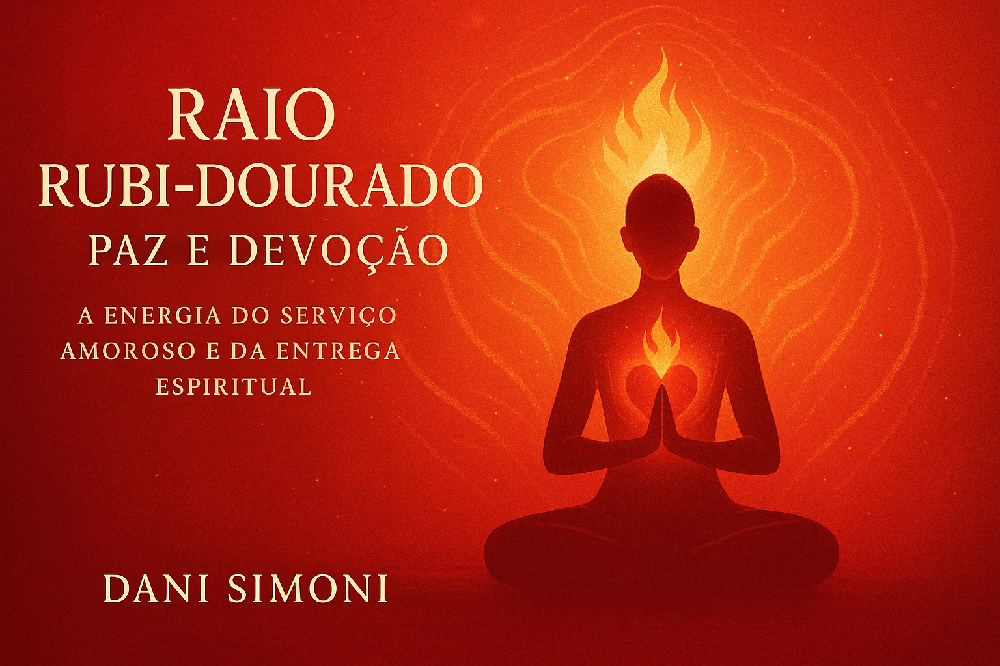

✨ O que você encontrará neste eBook:
- Ensinamentos sobre a paz interior e o poder da devoção
- Conexão com Mestra Nada e Arcanjo Uriel
- Afirmações, práticas energéticas e meditações
- Ritual da Chama Rubi para serenidade e equilíbrio
- Ferramentas para cultivar fé, compaixão e serviço à luz
Silencie, entregue-se e sinta a paz que tudo transforma.
Adquirir eBook